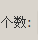
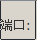
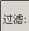

基于Libpcap库编写的嗅探程序，可以在Linux下嗅探到一些简单的网络数据包
本程序需要在Linux下运行，所以得首先有一台Linux系统的电脑，推荐Ubuntu10.04，本教程也是依据该系统编写！其他系统请酌情修改！
若下载不成功请点击这里到tcpdump官方网站下载 www.tcpdump.org
sudo apt-get install flex
sudo apt-get install bison
sudo apt-get install libpcap-dev
sudo apt-get install libnids-dev
sudo apt-get install libnet1-dev
如果尚未安装gcc请安装gcc，同时安装g++ ，g++在稍候编译QT的时候会用到
sudo apt-get install gcc g++
一般来说在安装了上述依赖包，进入到解压的Libpcap目录运行如下三个命令即可
./configure
make
make install
在经过了上述步骤之后，如果没报错则Libpcap安装成功，可以通过如下程序来测试：
#include "pcap.h"
int main(int argc,char *argv[]){
char *dev, errbuf[PCAP_ERRBUF_SIZE];
dev=pcap_lookupdev(errbuf);
if(dev==NULL){
fprintf(stderr,"couldn't find default device: %s\n",errbuf);
return(2);
}
printf("Device: %s\n",dev);
return(0);
}
编译指令：gcc -o device device.c -lpcap
备注：编译时要使用libpcap的参数-lpcap，否则会提示“pcap_lookupdev 未定义的引用”的错误。
运行指令：sudo ./device
备注：不以root账户运行，可能会提示 “Error:Couldn't find default device:no suitable device found”
至此Libpcap环境已经配置成功，下面来配置QT环境
Qt是一个1991年由奇趣科技开发的跨平台C++图形用户界面应用程序开发框架。它既可以开发GUI程式，也可用于开发非GUI程式，比如控制台工具和服务器。Qt是面向对象语言，易于扩展，并且允许组件编程。2008年，奇趣科技被诺基亚公司收购，QT也因此成为诺基亚旗下的编程语言工具。
sudo apt-get install qt4-dev-tools #开发包
sudo apt-get install qtcreator #IDE
sudo apt-get install qt4-doc #开发帮助文档
sudo apt-get install qt4-qtconfig #配置工具
sudo apt-get install qt4-designer #GUI开发工具
sudo apt-get install qt-demos #DEMO源码
注意在这个版本的软件包中，qt4-dev-tools 包含了Qt Assistant及Qt Linguist等工具，因此不需要单独安装这两个工具。其它的，qt4-doc 是帮助文档，包含了Qt中各个类库的详细说明以及丰富的例子程序，可以使用Qt Assistant 工具来打开阅读。qt4-qtconfig 是配置Qt环境的一个对话框，一般默认就行了，很少有必要去更改。qt4-demos 包含很多可以运行起来的可执行文件以及源代码。qt4-designer是用来设计GUI界面的设计器。
也推荐使用这种方式来配置QT环境而不是从qt官网下载qt安装包安装，然后在自行的配置环境变量，这样子很烦所。当然，要是喜欢折腾的同学可以尝试尝试。但不在本文探讨范围之内！| 范围 | 意义 | |
| 个数： | Rowakhakhfkahkjahskdhkj | |
| 端口： | Row | 嗅探的端口 |
| 过滤： | Row | 过滤规则 |